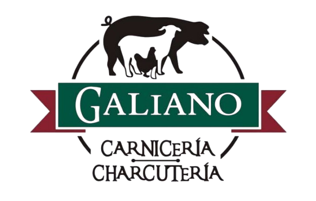

Jesús López Galiano
Desarrollador Web Full Stack
Apasionado por la tecnología y la creación de soluciones innovadoras.
Ver ProyectosSobre mí
¡Hola! Soy Jesús López Galiano, acabo de terminar mi formación como desarrollador web en Jaén. Aunque soy recién graduado, tengo un año y dos meses de experiencia como Técnico en Sistemas de Telecomunicaciones e Informáticos, donde he adquirido conocimientos técnicos y habilidades prácticas que me han preparado para este nuevo camino en el desarrollo web.
Además, he trabajado durante varios años en el negocio familiar, lo que me ha enseñado la importancia de la dedicación y el trabajo en equipo. Aunque no tengo experiencia laboral directa como programador, estoy buscando mi primera oportunidad en el mundo del desarrollo web y tengo muchas ganas de seguir aprendiendo y creciendo profesionalmente.
Estoy convencido de que con esfuerzo y motivación se puede lograr cualquier objetivo, y estoy listo para afrontar nuevos retos. Si buscas a alguien con mucha energía, disposición para aprender y mejorar, ¡aquí estoy!
Experiencia Profesional
Desarrollador Web Backend y Frontend - Prácticas
BRGI - Villacarrillo, Jaén (09/2024 - 12/2024)
- Mantenimiento y desarrollo de CRM para empresas de telefonía móvil.
- Resolución de incidencias y mejora de funcionalidades usando PHP, Symfony, JavaScript y SQL.
- Trabajo en equipo con GitHub y Visual Studio Code.
Diseñador de infraestructuras de Fibra Óptica
Cotronic - INYGES 2016, Albolote, Granada (03/2019 - 05/2020)
- Análisis y diseño de infraestructura para fibra óptica.
- Uso de software especializado de Telefónica (Planex, Sgipe, Visord).
- Certificaciones post-obra.
Formación Académica
Técnico Superior en Desarrollo de Aplicaciones Web
I.E.S. Las Fuentezuelas, Jaén (Finalizado en 2024)
Técnico Superior en Sistemas de Telecomunicaciones e Informáticos
I.E.S. Virgen de las Nieves, Granada (Finalizado en 2019)
Habilidades Técnicas
Proyectos
Tienda Online "Carnicería Charcutería Hnos. Galiano"
Desarrollo de una tienda web completa para el negocio local "Carnicería Galiano", incluyendo tienda online, gestión de productos y pedidos.
Tecnologías Utilizadas: HTML, CSS, JavaScript, PHP, MySQL.
Contacto
Dirección: Calle Polígonos, 9. 23370 Orcera (Jaén)
Teléfono: 620573098
Email: t1s7lopezm@gmail.com